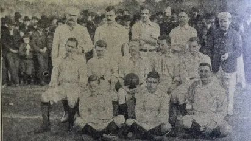

La selección masculina de fútbol de Argentina es el equipo formado por jugadores de nacionalidad argentina que representa a la Asociación del Fútbol Argentino (AFA) en las competiciones oficiales organizadas por la Confederación Sudamericana de Fútbol (Conmebol), ente rector de ese deporte en América del Sur, y por la Federación Internacional de Fútbol Asociación (FIFA).
Origen
Se da a conocer la seleccion Argentina en su primer partido internacional, que ganó por 6 a 0 contra Uruguay, el 20 de julio de 1902, en la ciudad de Montevideo. Este es reconocido por FIFA, AFA y AUF como el primer partido oficial de ambas selecciones. Anteriormente, en 1901, se disputó un partido amistoso en Uruguay, pero este no es considerado oficial por la AUF ni por la FIFA.

Copa América y Dominio Sudamericano
Argentina participó en la primera Copa América en 1916, el torneo de selecciones más antiguo del mundo. Durante las décadas de 1920 y 1930, Argentina fue uno de los equipos dominantes en Sudamérica, ganando varios títulos y destacándose como una de las selecciones más fuertes del continente.
Mundial de 1930: El Primer Mundial
Argentina fue finalista en el primer Mundial de la FIFA en 1930, celebrado en Uruguay. En la final, se enfrentó al equipo local y perdió 4-2. A pesar de no haber ganado, esta primera participación en una Copa del Mundo marcó el inicio de una trayectoria mundialista importante.
La Era de Maradona y la Copa del Mundo 1986
El fútbol argentino vivió su época dorada en los años 70 y 80, cuando Diego Maradona surgió como una superestrella mundial. Maradona llevó a Argentina a ganar la Copa del Mundo en 1986 en México. En el torneo, Maradona anotó dos de los goles más famosos de la historia: "La Mano de Dios" y "El Gol del Siglo" contra Inglaterra en cuartos de final. Argentina venció a Alemania Occidental 3-2 en la final y obtuvo su segundo título mundial.
Los 90 y la Época de Cambios
Argentina mantuvo una fuerte presencia en torneos internacionales en los años 90, aunque no logró ganar otro Mundial. Se destacó en las Copas Américas de 1991 y 1993, ambas obtenidas. Durante esta década, Argentina también alcanzó la final del Mundial de Italia 1990, nuevamente enfrentándose a Alemania y perdiendo en un partido muy disputado.
La Era Messi y el Renacer con la Copa América 2021
Lionel Messi, considerado uno de los mejores futbolistas de todos los tiempos, debutó con la selección argentina en 2005. Aunque tuvo numerosos éxitos a nivel de clubes, ganar títulos con la selección mayor fue un desafío hasta 2021. Argentina finalmente rompió una sequía de 28 años sin títulos importantes al ganar la Copa América en Brasil. En esta final, Argentina derrotó a Brasil 1-0, con Messi finalmente consagrándose con un título internacional importante.
La Tercera Copa del Mundo: Catar 2022
Bajo la dirección de Lionel Scaloni y liderados por Messi, Argentina ganó su tercer Mundial en 2022 en Catar. Después de una emocionante final contra Francia, el partido se definió en una tanda de penales. Esta victoria consolidó a Messi como un ícono definitivo del fútbol argentino y mundial, y Argentina se reafirmó como una de las selecciones más importantes en la historia del fútbol.
Legado y Futuro
Con tres Copas del Mundo y múltiples títulos sudamericanos, Argentina es uno de los equipos más exitosos y admirados en la historia del fútbol. La selección continúa produciendo grandes talentos y su afición es conocida por su pasión y apoyo incondicional, asegurando que Argentina siga siendo una potencia del fútbol mundial.